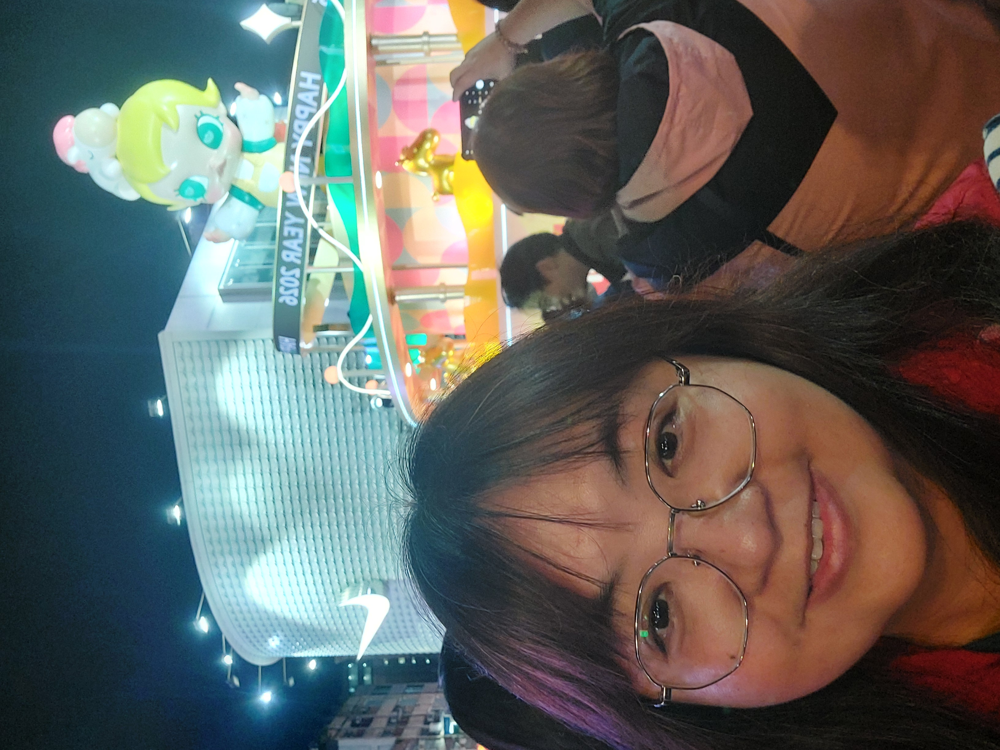

人還不錯跟我們有說有笑,
上課的時候補充超多知識,
非常的有耐心.

有趣,會教我們畫一些好看的
做品,很有耐心.
非常的厲害,會教我們基本的
東西,內容很有趣,有時會送3D
打印的東西

很厲害的東西,他還擅長
電腦,是一名厲害的老師.
| 國文老師:孫珮瑜 |
|
她是我們的國文老師他 人還不錯跟我們有說有笑, 上課的時候補充超多知識, 非常的有耐心. |
| 藝術老師;游弘毅 | |
他是一位藝術老師,上課非常 有趣,會教我們畫一些好看的 做品,很有耐心. |
| 電腦老師;江健志 | 他是電腦老師,在電腦方面 非常的厲害,會教我們基本的 東西,內容很有趣,有時會送3D 打印的東西 |
|
| 生科老師;吳慶鴻 | |
他是生科老師,教我們做 很厲害的東西,他還擅長 電腦,是一名厲害的老師. |